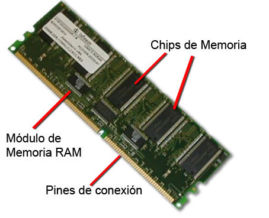
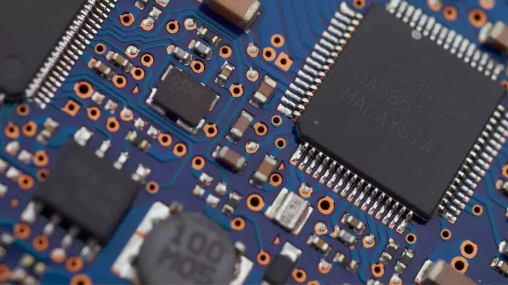
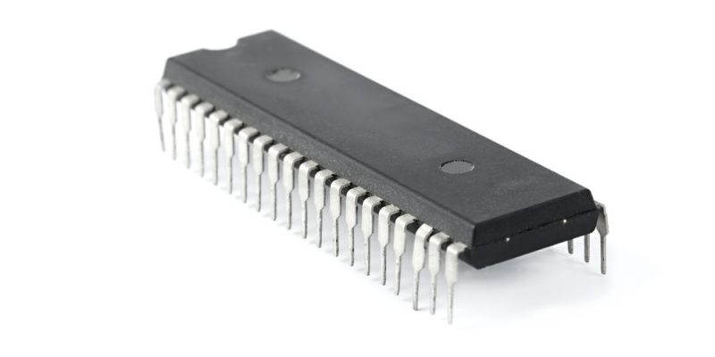
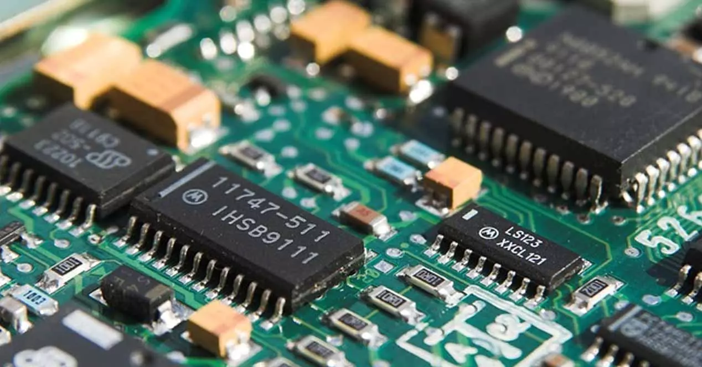
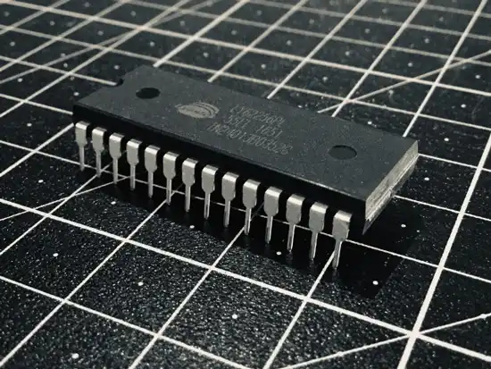

Las Memorias en Informatica

Memoria RAM
La Memoria RAM es el tipo de memoria mas importante del pc,ya que es la memoria desde donde el procesador recibe instrucciones, además, es donde se guardan los datos que se estan utilizando en el momento actual
La memroia RAM, por sus siglas en ingles "Random Acces Memory" o "Memoria de Acceso Aleatorio",se localiza en la placa base y recibe el nombre de aleatorio debido a que puede acceder a cualquier dato o informacion del almacenamiento.Es una memoria volatil,para almacenar informacion necesita alimentacion electrica,por lo tanto, si el pc se desconecta o apaga los datos presentes en la memoria desapareceran.
Tiene la funcion de conservar la informacion de corto plazo en nuestro computador..
Metodo de acceso:
Permite acceder para la lectura y escritura de la informacion, que se almacena en codigo binario. Este codigo binario puede ser de:
- Programas de Usuarrio: Aplicaciones, juegos.
- Sitema Operativo: Linux, Mac , Windows.
- Controladores de dispositivos: Raton, Tarjeta de sonido..
-
RAM DIMM:
-
RAM SODIMM:
-
Almacenamiento de software:
-
Almacenamiento de datos:
-
PROM :
-
EPROM:
-
EEPROM:


Tipos de memoria RAM
Modulos de memoria en linea dual, se suelen encontrar en ordenadores de mesa.
Modulos de memeoria en linea doble,se encuentra mayormente en computadores portatiles.

Memoria ROM
La Memoria ROM es un tipo de almacenmiento empleado en computadores y otros dispositivos electronicos,que se cracteriza por ser unicamente de acceso para lectura y nunca para escritura, es decir, se le puede recuperar pero no modificar ni intervenir
La memoria ROM es de acceso sesecuencial y su funcionamiento es independiente de la presencia de una fuente de energia.Su contenido no puede modificarse de manera simple y cotidiana, y suele contener informacion introducida en el sistema por el fabricante, de tipo basico, operativo o primario.
Memoria ROM- Read-Only Memory, Memoria de Solo Lectura
Usos principales
Se le utiliza para instalar el software de arranque o de funcionamiento mas basico.
Se emplea para almacenar los datos que no requerirán de modificacion alguna en la vida del producto.
  
Tipos de memoria ROM
(Programmable REAd-Only Memory o Memoria de Solo Lectura Programable), es de tipo digital y puede ser programada una unica vez, ya que cada unidad de memoria depende de un fusible que se quema al hacerlo.
(Erasable Programmable Read-Only Memory o Memoria de Solo Lectura Borrable y Programable) es un tipo de memoria ROM que puede borrarse al exponerse a la luz ultravioleta o a altos niveles de voltaje.
( Electrically Erasable Programmable Read-Only Memory o Memoria de Solo Lectura Borrable y Programable Electricamente) es una vaiable del EPROM que no requiere rayos ultravioleta y puede reprogramarse en el propio circuito.